TC4985 Outings
I thought it would be a good idea to record some of the runs on which I took the TC. Many short trips are just over to my Father's at Sompting, or to meet friends for lunch, but some are with other MG or classic car owners.
Going to my Father's house is about a 12 miles round trip, so my journey, on Tuesday 28th July, to Cripps at Storrington to have the brake master cylinder replaced and the return the next day, became my longest journey at 16 miles.
Now that the brakes did not lock on after about eight miles, I took up an invite from Stewart Penfound to visit him in Brighton. So on Fridy 7th August I made the 24 miles round trip, gradually extending the range of my journeys.
The next extention was on Monday 10th August to the West Sussex MG Owners Club meeting at Worthing Rugby Club, a whole 30 miles. In this way I was gradually extending the length of journeys and gaining more confidence in the car.
The rest of the page gives a few details of the major outings in TC4985.
VSCC Gathering at Dial Post, August 2015
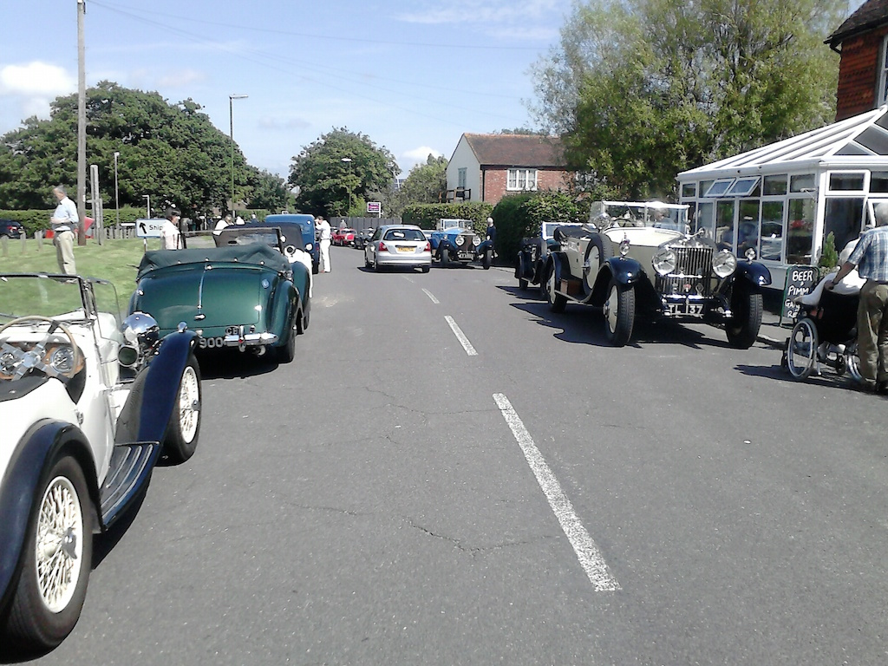Two friends have classic cars and so I arranged to meet them on Friday 21st August 2015 for lunch at the VSCC gathering at the Crown Inn at Dial Post. Angela came with me and from there we went back to the house of one of the friends before returning home; a total of 26 miles. This photo shows some of the cars that gathered in Dial Post.
It was after this outing that I started dismantling the radiator so as to get at the rusting radiator bottom bracket.
South Downs Run 2015
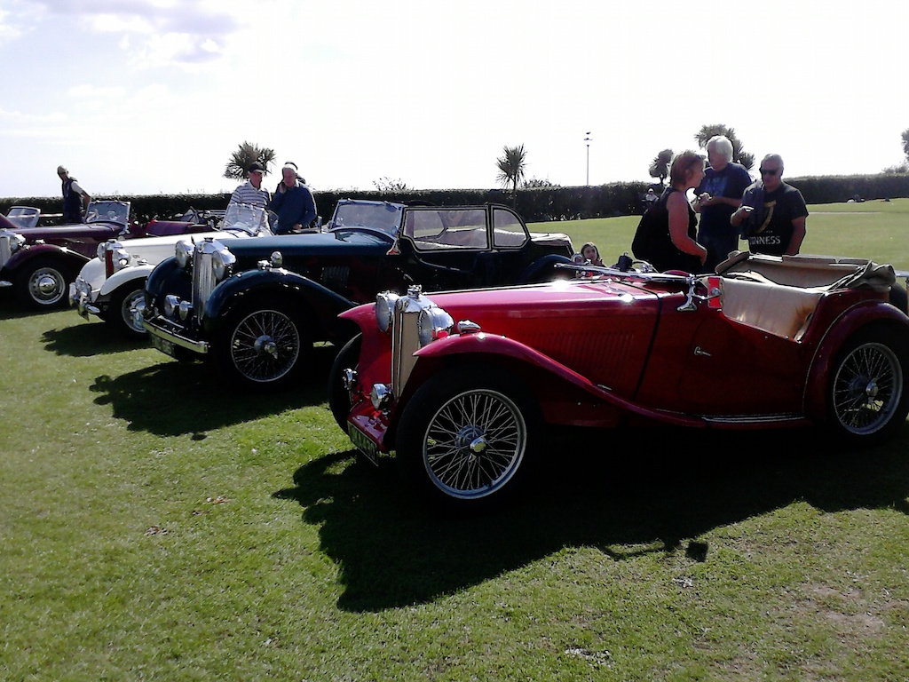 The MG South Downs Run was held on Sunday 6th September 2015, before I had finished putting my MG back together. In any case, the 100+ miles round trip was further than I would have undertaken at this stage. So I volunteered to act as a steward at the event. It was a fine day, which seemed to go well. These two photos show the smaller group of pre-56 cars and the bulk of the MGs.
The MG South Downs Run was held on Sunday 6th September 2015, before I had finished putting my MG back together. In any case, the 100+ miles round trip was further than I would have undertaken at this stage. So I volunteered to act as a steward at the event. It was a fine day, which seemed to go well. These two photos show the smaller group of pre-56 cars and the bulk of the MGs.
Sussex Wanderers November 2015 Run to Handcross
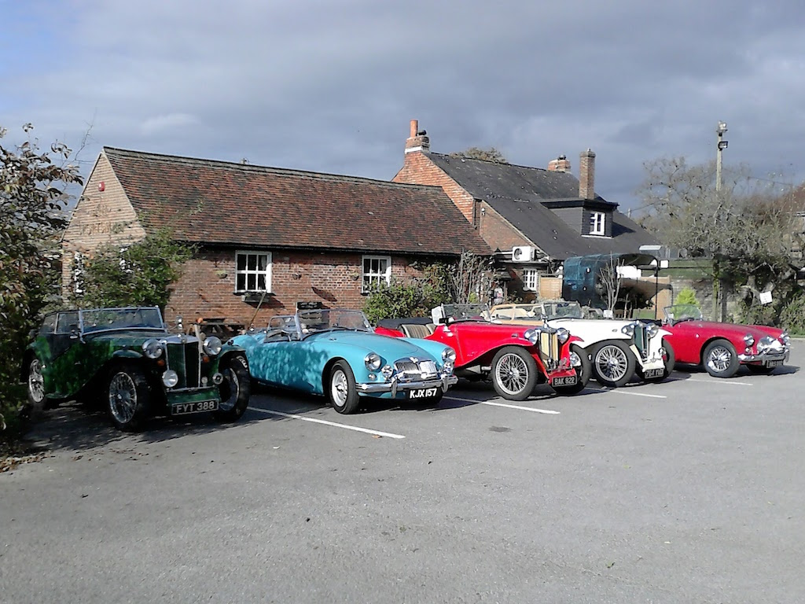The Sussex Wanderers are a group of MG owners who are members of either the MG Car Club or the Octagon Club and go on monthly runs from April to December. I had been away for the October run, but on Wednesday 11th November 2015 we met at the Sportsman pub (for coffee) at Goddards Green, about 12 miles from home via Small Dole and Hurstpierpoint, and drove, via a network of country lanes, to the Red Lion at Handcross for lunch. Since I had no navigator, I and a TA driver followed another TA driver who did have a navigator. An excellent day covering a total of 52 miles. This photo was taken at the Sportsman pub. there were a total of about 20 MGs.
Sussex Wanderers December 2015 Run to Dial Post
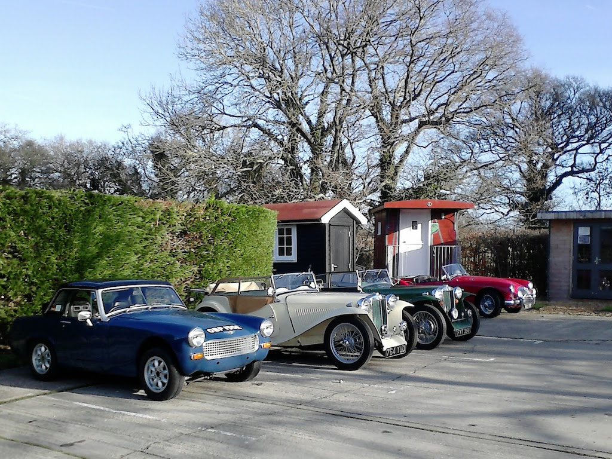David, the Sussex Wanderers organiser, arranged another run on Wednesday 9th December 2015. We met at the Camelia Botna garden centre (for coffee) and then drove along muddy lanes (going past the Balcombe railway viaduct) to the Crown Inn at Dial Post for Christmas lunch. Another excelent run, with a total of 46 miles covered. The photo shows some of the cars meeting at the garden centre. This time there were only two T-Series.
Sussex Wanderers April 2016 Run to West Chiltington
 On Tuesday 12th April 2016, the first outing of the year for the Sussex Wanderers started at Shoreham Airport. A number of cars parked in front of the art deco terminal building while we went in for coffee. My TC is on the right. Overall there were about 15 cars that then made their way up Annington Road, down Maudlin Lane, around Bramber, through Small Dole, right at Woods Mill and on through Blackstone, through Partridge Green, up to the A24 and through Dial Post, ending up at West Chiltington where we had a good lunch in the Queen's Head. It was a fine, sunny day, with another TC, two TAs and a 'special' of some form.
On Tuesday 12th April 2016, the first outing of the year for the Sussex Wanderers started at Shoreham Airport. A number of cars parked in front of the art deco terminal building while we went in for coffee. My TC is on the right. Overall there were about 15 cars that then made their way up Annington Road, down Maudlin Lane, around Bramber, through Small Dole, right at Woods Mill and on through Blackstone, through Partridge Green, up to the A24 and through Dial Post, ending up at West Chiltington where we had a good lunch in the Queen's Head. It was a fine, sunny day, with another TC, two TAs and a 'special' of some form.
Drive-It Day 2016
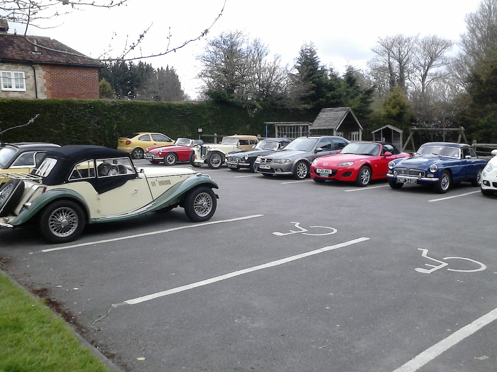Sunday 19th April 2016 was the national Drive-It Day and the West Sussex MG Owners Club organised a run. We met at Cootham for coffee and then drove down small back roads to Elsted, south west of Midhurst. Many of us, who were in a convoy, decided that the 'farm track' we were on was wrong and so turned around. It was the first time that I had driven the TC in a ploughed field! It seems that we were on the right road, but we followed someone's satnav and got to Elsted.
I took Brandon as my navigator, his first ride in the car. We had the roof down from Cootham to Elsted and did a total of 70 miles; the furthest in a single day so far.
The photo shows some of the cars in the pub car park at Cootham.
West Sussex MG Owners Club 'Run for Supper' 2016
On Monday 9th May 2016 the West Sussex MG Owners Club held it's 'Run for Supper'. The supper being fish & chips. We met at Washington and then followed a route that took about an hour and ended up at Worthing Rugby Club, the normal venue. Angela navigated and we did a total of 48 miles, returning in the dark. There was light rain on the way to the Rugby Club, but it had stopped by the time that we travelled home.
Sussex Wanderers May 2016 Run to Warnham
The following Wednesday (11th May) was the monthly Sussex Wanderers run. I was on my own this time, so had to follow someone else. We met at Billys on the Road, on the A29 just north of Billingshurst, and followed a 25 mile route, down some very narrow lanes, to Warnham, just off the A24 north of Horsham. There was quite persistant rain on the way to the start, but some of us had the roof down for the main run, only getting a little wet. I also had the hood down on the way home, doing a total of 65 miles. The car got quite dirty!
Sussex Wanderers August 2016 Run to Balls Cross
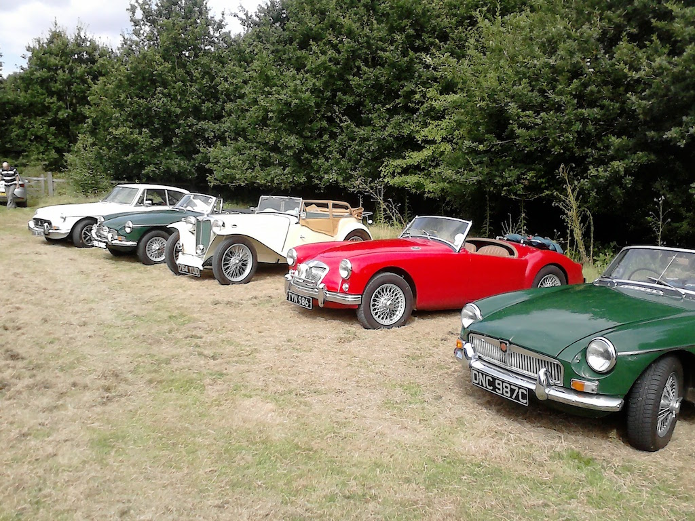It's almost three months since I went on a Sussex Wanderers run due to the work that I did on the stub axles and spindles. However, today (Wednesday 10th August) I took the TC to the RSPV nature reserve and Pulborough Brooks to meet up with about another 17 MGs. Bob, who owns an MGA that is currently out of action, came in his Seat and so offerred to navigate for me. So after coffee and a chat we set off for Balls Cross via Wisborough Green, a run of 25 miles.
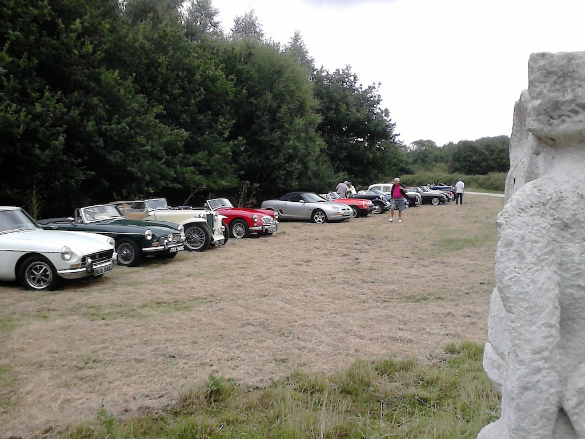The weather was fine and it was a good run. Surprisingly no one caught us, but a lot of cars arrived only a minute or two latter. After lunch in the garden we returned via Petworth to Pulborough Brooks, where I dropped off Bob, and then I returned home, a total of 59 miles.
South Downs Run 2016
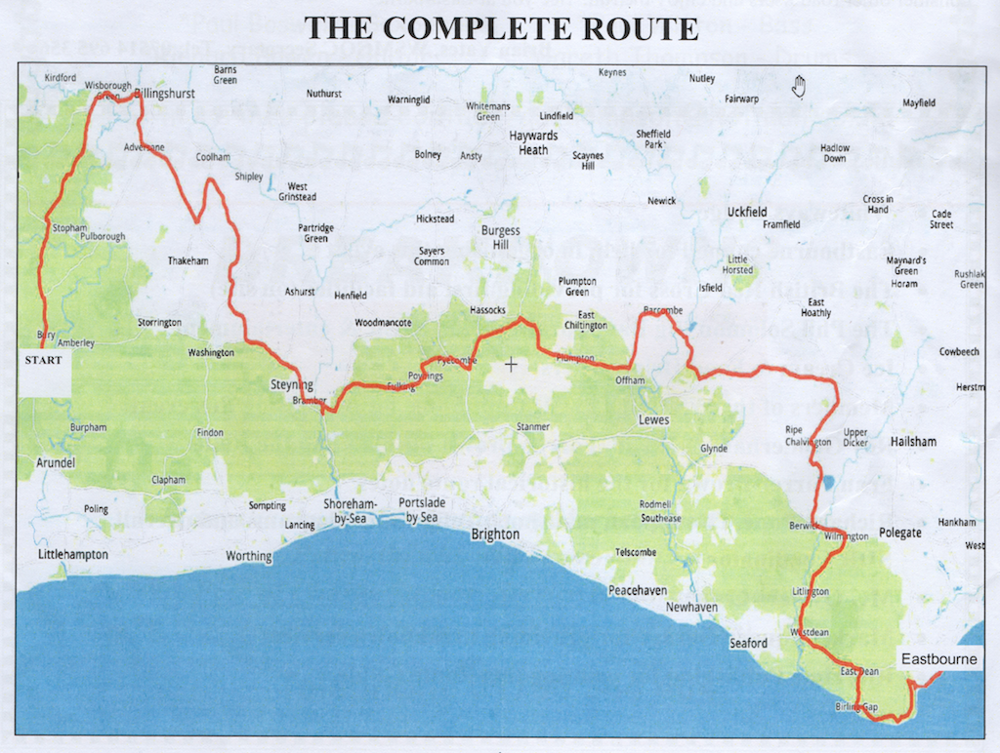The time came around for the big event of the year; the South Downs Run. On the morning of Sunday 4th September 2016 we set off in the MG and drove to a cafe above Arundel (just off Whiteways roundabout), which was the start of the run (organised by the West Sussex MG Owners Club). We left there at about 9:30 and followed a route (that went through Bramber and along the lee side of the Downs) to Eastbourne, 84 miles by our trip meter.
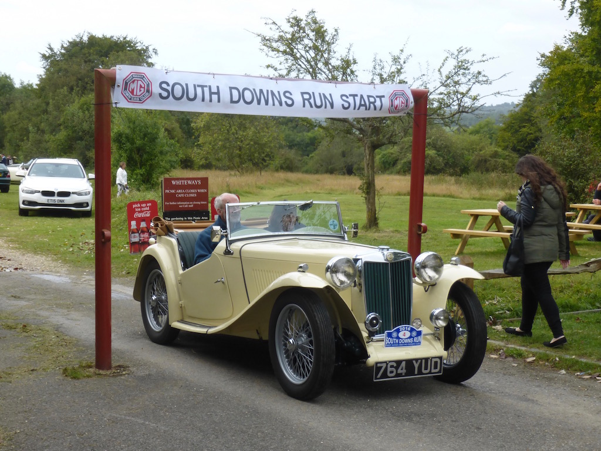 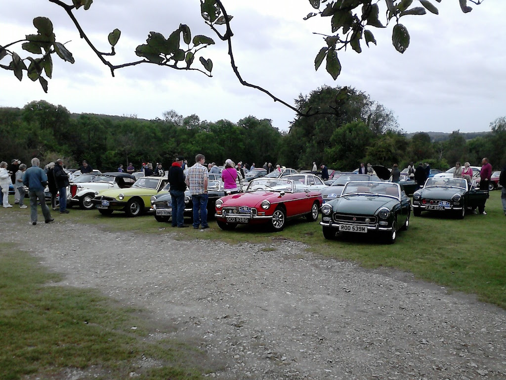About 200 MGs took part in the run. As you can see, quite a few cars were at Whiteways when we arrived. The photo of us setting off on the run from Whiteways was given to me by the editor of the WSMGOC Main Gear magazine.
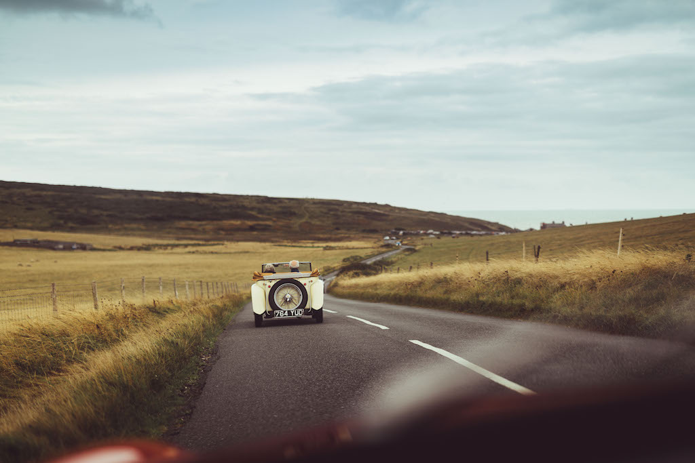This photo of us driving down into Birling Gap was taken from 'A Tootle Along the South Downs' in Spoke magazine.
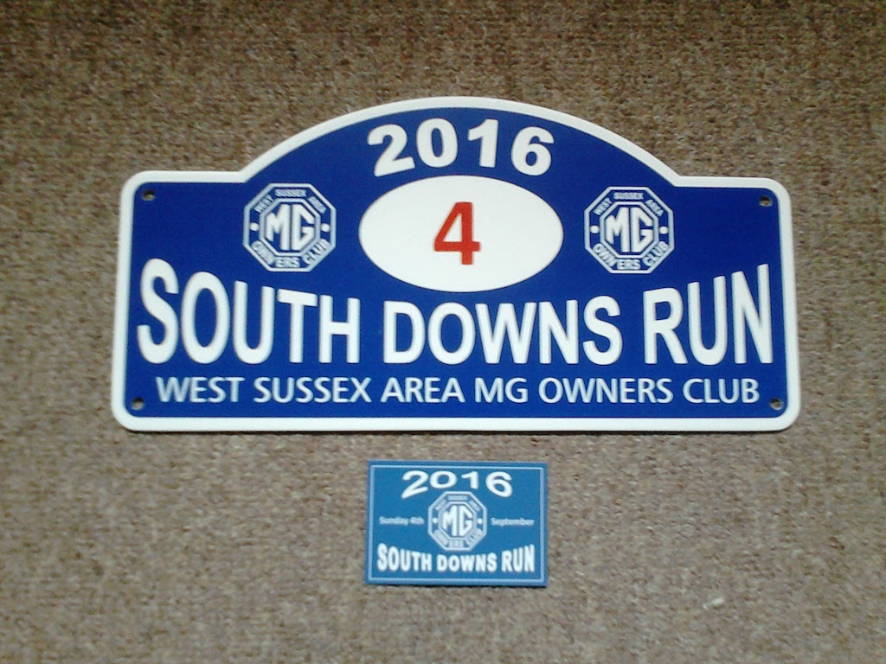We stopped at the Castle Hotel in Bramber for coffee and then arrived in Eastbourne at one o'clock. After eating our packed lunch on the promenade and walking along to the pier and back, we left at 3:15 and arrived home, having driven along the coast road through Newhaven and Brighton, just before five.
We did a total of 134 miles, with the hood down all the way. It was overcast and not particularly warm, but it stayed dry. When we got home we were very weary.
 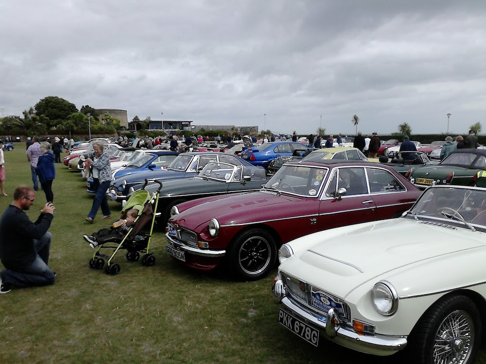
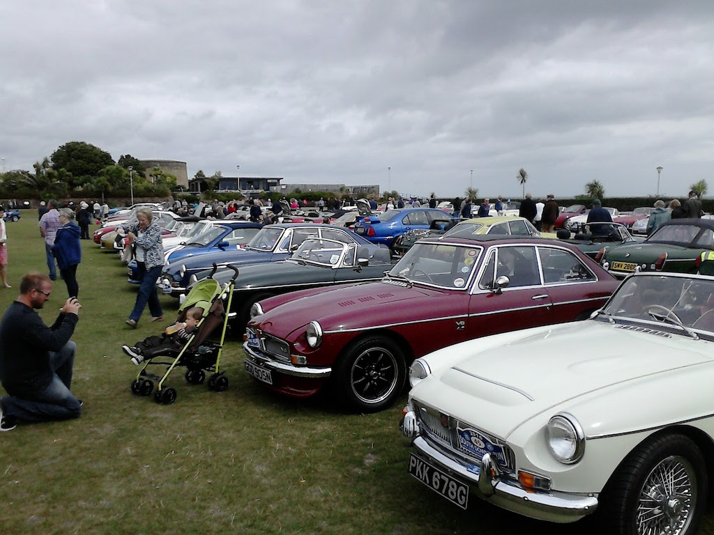
 Another photo taken from 'A Tootle Along the South Downs' in Spoke magazine shows our TC at Eastbourne.
Another photo taken from 'A Tootle Along the South Downs' in Spoke magazine shows our TC at Eastbourne.
Sussex Wanderers September 2016 Run to the Bluebell Railway
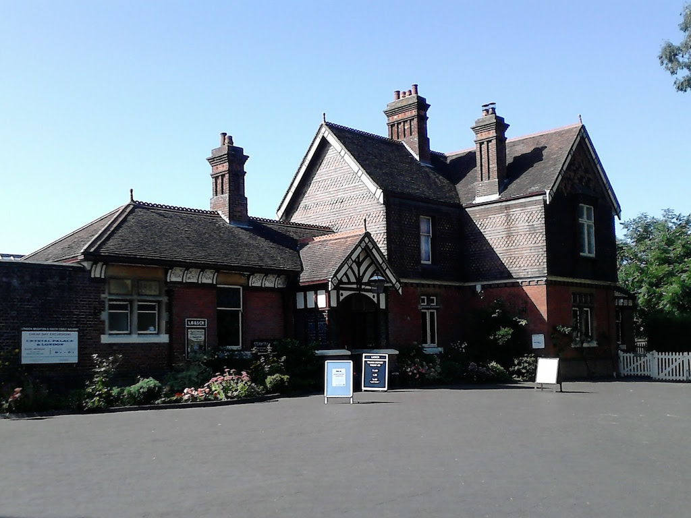On Septmber 14th the Sussex Wanderers met at The Orchard, a cafe at West Grinstead, just east of the Buckbarn crossroads on the A272 (about 10 miles north of home). After coffee and a chat we left for a 28 mile run, down some very narrow roads, to the Bluebell Railway Sheffield Park Station. There must have been about 20 cars.
Most people had booked a train ride with lunch, but a few of us had lunch in the station cafe and just looked around. I then took the scenic route home via Ditching, doing a total of 66 miles.
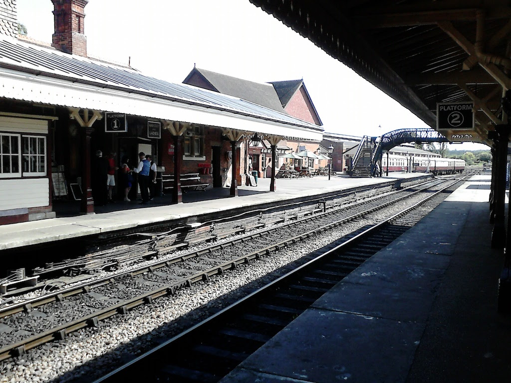Sussex Wanderers October 2016 Run to Goodwood
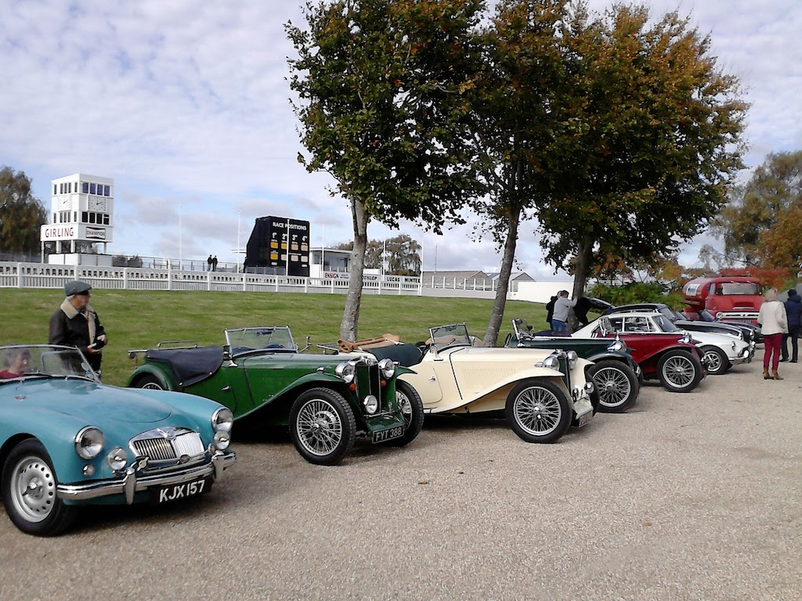About 25 MGs (and an Aston Martin) gathered on October 19th at the Queen's Head in West Chiltington for coffee and a chat. Again I was on my own and so arranged to follow another T-series that had a navigator and from there we set off for Goodwood. On the way clearly some people took a wrong turn, since MGs appeared from all directions!
When we arrived at Goodwood, having travelled down some very narrow lanes, some very fast cars were queuing in the pit lane and being let out every ten seconds to do a 'sprint' lap. We then lined up on the starting grid and did four 'parade' laps. In other words, we followed a safety car in single file at a fairly sedate speed around the track. This was a little dissapointing.
Afterwards we had lunch in the old control tower cafe next to the track. Although the journey from West Chiltington to Goodwood was 27 miles, I did a total of 77 miles.
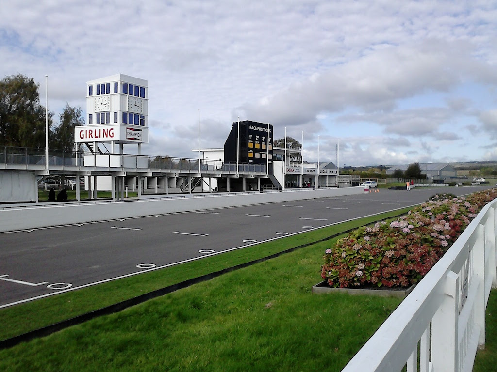 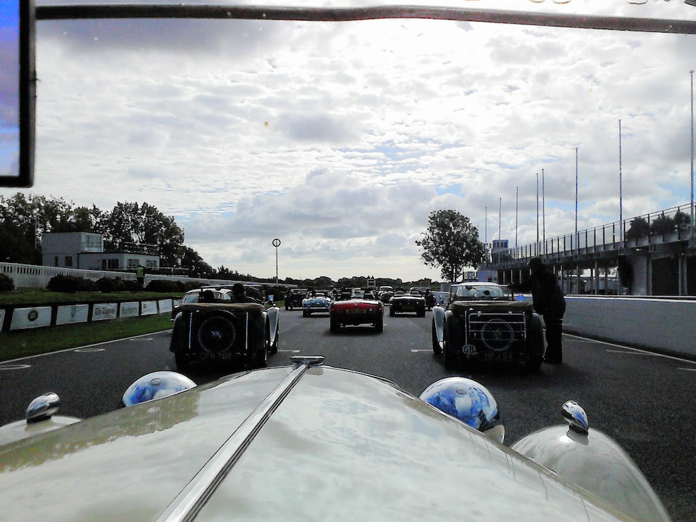Sussex Wanderers November 2016 Run into Surrey
This month's Sussex Wanderers run took us into Surrey. We met at the Newbridge Nurseries (in the Stooks cafe) at Broadbridge Heath for coffee and a chat. As usual I had to follow someone and so asked Brian and his 'lady friend'. Since they got lost trying to find the garden centre I should have been warned. En route they went wrong three times, the first after only 1½ miles!
From Broadbridge Heath we took a convoluted route around north Sussex and south Surrey, finishing at The Parrot at Furnace Green. There had been a lot of rain over night and, although it had stopped, there was a lot of spray and mud on the roads. The Parrot was very good and we had 42 people there for lunch. Afterwards, I took a more direct route home, straight down to Broadbridge Heath, down the A24 and through Partridge Green. I got home at 3:15 having done a total of 76 miles.
Sussex Wanderers December 2016 Run for Christmas Lunch
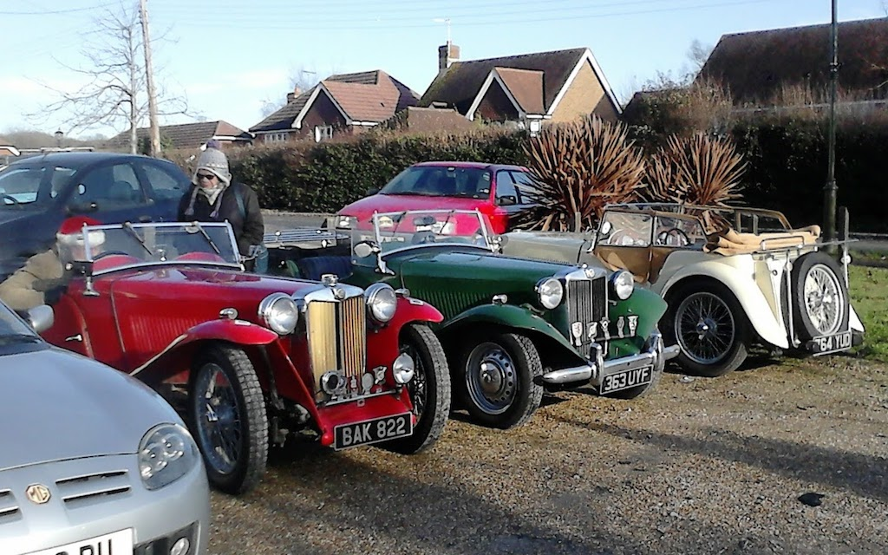This time Angela was able to join me on the MG run. We met the other MG drivers at Camelia Botnar, north of Partridge Green for coffee. Then a 30 mile round about run to the Red Lion at Ashington for lunch. It was a good run and a good lunch, particularly since I won the first raffle prize of a bottle of prosecco! Also the weather was sunny (between rainy and overcast days) and so we had the hood down all the way. As you can see in the photo (taken at the Red Lion), some people wore Christmas atire.
We were home by about 3:30, having done a total of 51 miles. THe flasher unit stopped working part way, so I have some repairs to do.
VSCC Lunch at Dial Post, March 2017
This year I had only taken TC4985 out for two short runs, one in February (two of my figure of eight circuits amounting to 12 miles) and one earlier in March when I drove up to Henfield and back (15 miles). These were really just to give the car a short run and to maintain the charge in the battery. However, on Friday 17th March we drove up to Dial Post to meet for lunch with Hamish and Simon. I really should have taken some photos, particulalry of Simon's 1932(?) Riley and of Hamish's Triumph Dolomite, which showed serious overheating problems. Simon's latest addition to his 'stable' replaces another, very similar, Riley, but this variant is said to only have eight examples remaining! We only had soup since we were going to a fish & chip supper that evening. We only did a total of 20 miles.
Sussex Wanderers April 2017 Run around Chichester
 This was the first Wanderers run of the year, starting at the Black Rabbit just outside Arundel and ending at The Gribble (named after Mrs Gribble who lived there when it ws a private house) at Oving, south of Chichester. The run itself was 30 miles, but I did 73 miles in total. The day started chilly, but the sun came out en route and it was a pleasant run. As is usually the case, I had to follow someone who had a navigator. They only went wrong once and everyone in the procession followed them!
This was the first Wanderers run of the year, starting at the Black Rabbit just outside Arundel and ending at The Gribble (named after Mrs Gribble who lived there when it ws a private house) at Oving, south of Chichester. The run itself was 30 miles, but I did 73 miles in total. The day started chilly, but the sun came out en route and it was a pleasant run. As is usually the case, I had to follow someone who had a navigator. They only went wrong once and everyone in the procession followed them!
Sussex Wanderers May 2017, Horsham to Loxwood
 A very fine, sunny day. We met at The Boars Head on the outskirts of Horsham and drove the twenty something miles to the Onslow Arms at Loxwood, down some very narrow lanes. There were about 28 cars (including a split screen Morris 1000 saloon and an oldish Mercedes) and again I had to follow others since I was on my own. Some people had booked a trip on the Wey & Arun canal, but I came home after lunch. Surprisingly they were not very well organised in the pub, considering they had our orders in advance. Overall I drove 61 miles.
A very fine, sunny day. We met at The Boars Head on the outskirts of Horsham and drove the twenty something miles to the Onslow Arms at Loxwood, down some very narrow lanes. There were about 28 cars (including a split screen Morris 1000 saloon and an oldish Mercedes) and again I had to follow others since I was on my own. Some people had booked a trip on the Wey & Arun canal, but I came home after lunch. Surprisingly they were not very well organised in the pub, considering they had our orders in advance. Overall I drove 61 miles.
Sussex Wanderers June 2017, Borde Hill to Isfield
 Probably the best summer's day so far this year for a run between the cafe at Borde Hill Gardens near Haywards Heath, where we had coffee, to the Laghing Fish pub in Isfield, East Sussex, for lunch. Borde Hill was 19 miles from home and the run was 25 miles. Overall I did 77 miles, with clear blue skies all day.
Probably the best summer's day so far this year for a run between the cafe at Borde Hill Gardens near Haywards Heath, where we had coffee, to the Laghing Fish pub in Isfield, East Sussex, for lunch. Borde Hill was 19 miles from home and the run was 25 miles. Overall I did 77 miles, with clear blue skies all day.
VSCC Lunch at Dial Post, June 2017

 The green car in the foreground is Hamish and Sue's Triumph Gloria. I met them at the VSCC lunch gathering at Dial Post. As can be seen from the second photo, there was quite a collection of interesting cars.
The green car in the foreground is Hamish and Sue's Triumph Gloria. I met them at the VSCC lunch gathering at Dial Post. As can be seen from the second photo, there was quite a collection of interesting cars.
Angela was busy with errands for Bay, so couldn't come along. The round trip, via the Beeding petrol station, was 22 miles.
Sussex Wanderers July 2017, Billy's to Alfold Bars
 This month's run started at Billy's on the Road, just north of Billingshurst. After coffee about 50 people, in a selection of MGs, set off for a 25 mile drive, partly through the Surrey countryside, to a pub at Alfold Bars, on the B2133 just beyond Loxwood. It was well organised and I had a good run home, arriving at about three after a total of 63 miles.
This month's run started at Billy's on the Road, just north of Billingshurst. After coffee about 50 people, in a selection of MGs, set off for a 25 mile drive, partly through the Surrey countryside, to a pub at Alfold Bars, on the B2133 just beyond Loxwood. It was well organised and I had a good run home, arriving at about three after a total of 63 miles.
Sussex Wanderers August 2017, Bury to Goodwood
We met at the Squire & Horse at the bottom of Bury Hill. I had the hood down on the way there, but as we left it started raining. It then rained all of the 25 miles to the Goodwood race cicuit. I tried just following the procession of MGs, but lost them on one point (being stuck behind a dust cart going up a steep hill), missed the turn and had to do a three-point turn on a main road. We had hardly finished parking at Goodwood when we were sheparded on to the track. Still in the rain we did four laps in single file. However, this year the escort car travelled at a reasonable speed. In fact I could only just keep up, doing an indicated 50 mph along the straights. We then retired to the old control tower for lunch. Luckily I got my lunch quickly and then drove home (in the rain). By the time that I got home, after a total of 78 miles, at about 3:30 I was quite wet.
It was after this run that I put the car on axle stands to check it over and clean underneath. In the process I discovered a little oil in the rear off-side brake drum and a lot of oil in the near-side drum. Normally they are dry.
Sussex Wanderers April 2018, West Chiltington to Cranleigh
Not only was this the first outing of the Sussex Wanderers this year, it was the first substantial run of TC4985 since the work on the rear axle. It also happened to be one of the few dry and relatively warm days so far, even if the ground was rather wet and muddy.
There was a good turn-out, including a triple M and an older MG that I didn't recognise (possibly a PA), a TD and a couple of TAs. It was said that there were 53 people at lunch. We met at the Roundabout Hotel at West Chiltington for coffee and cake before setting off in a northerly direction. Once again I had to follow someone with a navigator, in this case a Lotus Elise (the engine of his TC is still in bits). The roads seemed to get wetter the further north we went. However, we arrived at the Park Hatch in Cranleigh. Lunch was reasonable, even if it did take a while to arrive.
The round trip was a total of 65 miles, the the run itself being about 28.
WSMGOC Treasure Hunt - April 2018, Lurgashall
 This outing was basically a drive to Lurgashall, just north of Petworth, park the car, roam around the village trying to answer questions on the sheet and then have lunch in the Noah's Ark pub. Lurgashall is a pretty village built around a huge village green on which they play cricket (and were playing on this Saturday afternoon). It wasn't a very warm day and we didn't win the treasure hunt. However, we drove a total of 54 miles, mainly in the dry, and had a good day out.
This outing was basically a drive to Lurgashall, just north of Petworth, park the car, roam around the village trying to answer questions on the sheet and then have lunch in the Noah's Ark pub. Lurgashall is a pretty village built around a huge village green on which they play cricket (and were playing on this Saturday afternoon). It wasn't a very warm day and we didn't win the treasure hunt. However, we drove a total of 54 miles, mainly in the dry, and had a good day out.
Sussex Wanderers - May 2018, Ditchling to Firle
 This run was entirely within East Sussex, although to get to Ditchling I took one of the most pleasant routes in West Sussex, along the back of the Downs, through Fulking and Poynings. We met at the Notcutts garden centre for coffee and then set off, with me following a TD and a Porsche Boxter following me. It was a pleasant route through the East Sussex countryside, culminating in a run up Bo Peep Lane, the latter part of which is the old Firle hill climb (last used as such in 1967). The photo was taken in the car park at the top, before returning to the bottom for lunch at a pub in Firle. Overall today I drove the TC 69 miles.
This run was entirely within East Sussex, although to get to Ditchling I took one of the most pleasant routes in West Sussex, along the back of the Downs, through Fulking and Poynings. We met at the Notcutts garden centre for coffee and then set off, with me following a TD and a Porsche Boxter following me. It was a pleasant route through the East Sussex countryside, culminating in a run up Bo Peep Lane, the latter part of which is the old Firle hill climb (last used as such in 1967). The photo was taken in the car park at the top, before returning to the bottom for lunch at a pub in Firle. Overall today I drove the TC 69 miles.
© David James 2018 Last updated: 12th April 2018